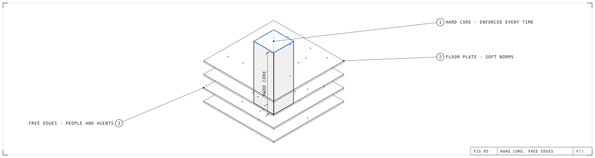

Protocol Institute
Protocol InstituteAbout
At the Protocol Institute, the Protocols for Business research group looks at organizations through their protocols: the recurring ways work moves, decisions get made, and data is found and trusted.
The capability: protocol vision
Protocol vision is the capability to see the protocols a business actually runs on. An org chart shows authority, a strategy shows intent, a software stack shows tools. Protocols show what actually recurs, between people, software and machines. When the same thing keeps going wrong, or surprisingly right, in the same place, there is a protocol underneath it. Good protocols fade into the background and produce things that don’t happen, so seeing them takes training. People build it by watching protocols at work, and a company builds it by keeping logs of what its work does.
The practice: Business Protocol Management
Business Protocol Management is the practice of building and changing those protocols. A company finds the few protocols that everything else relies on, such as who may move money, what data leaves the company, and which checks every piece of work must pass. It builds those into its architecture as a hard core, and it leaves people and agents free to work inside them. Then it keeps a log of what actually happens and adjusts the core as the business grows.
The practice borrows from aviation, nuclear power and site reliability engineering, which manage systems they can’t fully control. It matters more with AI. A small team can now run hundreds of thousands of agents, and nobody can supervise that many one action at a time. Read the introduction to Business Protocol Management, or see how the year’s syllabus explores it.

Where we come from
The group began in 2025 as one of the first three special interest groups at Summer of Protocols. It is now a research group of the Protocol Institute, and its notes appear in Protocolized.
People
Hosts the SIG and leads AI Native Data Operations. Summer of Protocols researcher (Welcome to the Swarm). @rafa_0x
Leads Protocol Futurism and co-wrote the Durable AI Adoption guide. Writes Archival Time.
Director of the Protocol Institute; leads the Cognitive Ergonomics project. Summer of Protocols researcher (Safe New World).
Work so far
- Guides
- Cases
- Workshops
AI Kitcraft Sep 2026, AI Futurama, Berlin Oct 2025
- Essays
To sponsor the work or propose a partnership, see Research.